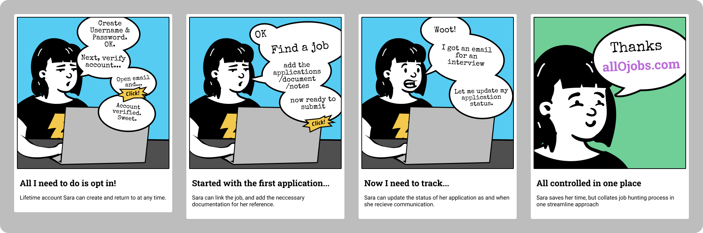
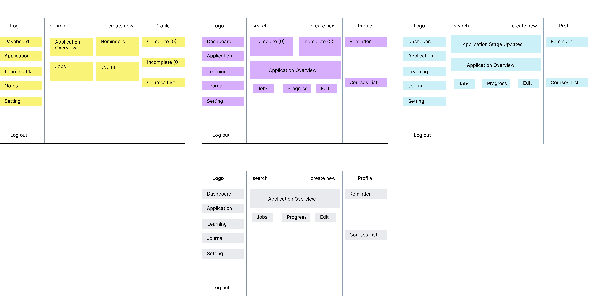
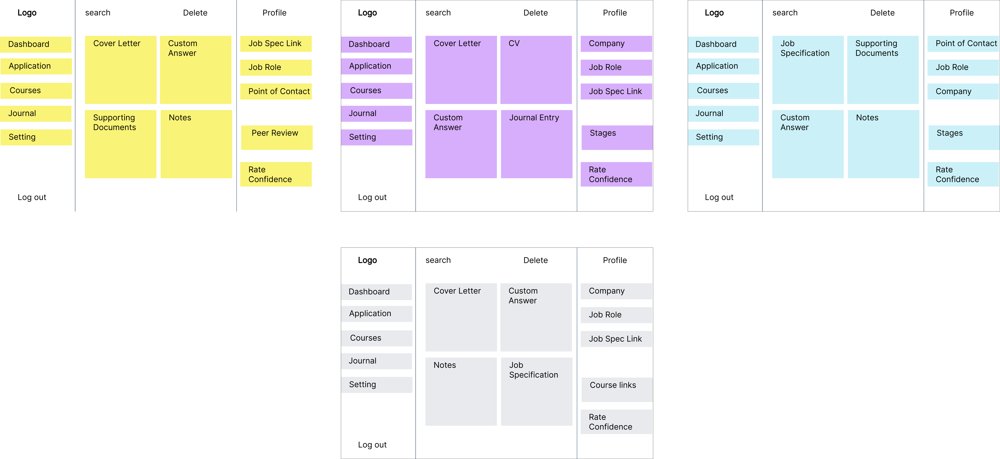
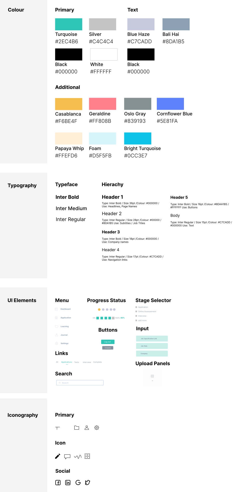

UX Research
Problem
The user is unable to collate their job applications that would help structure their energy on increasing their chances of getting employment.
Solution
Within the application tab, the user should be able to experience a linear cycle of applying, but with a record of information all in one place to refer to.
WHAT IS allO Jobs?
allO Jobs is a career management tool, aimed at helping secure a role; whether that’s a graduate role, changing direction or simple moving up the career ladder.
DESIGN PROCESS
In this process, I will add the storyboard and paper prototype to the design phase to help brainstorm and understand the painpoint within the selected design.

INTERVIEWS
The interviews were conducted at random and there were no requirements to fill out this application, just that you were over 18 years old[1]. I interviewed 10 people, aged between 18 - 40. I asked the following questions:
- Are you currently employed?
- If Yes, what are you next steps in your career journey?
- How do you think you would go about achieving this?
- What frustration would you/or have you encountered whilst doing this>
- If you answered no,what are the current challenges you are facing on your job search?
- What has been an important element of the job search? i.e feedback
- How are you currently organise/managing your search?

The aim of these interviews was to build empathy of the user and how they would use the application. Above are a few comments that I have categorized in a themes, this will help inform the user persona.
USER PERSONA
Based on the information gathered, I have collated three user persona’s that illustrate the key demographic of users that would be interested in using allO jobs. This will outline the needs, goal, motivation and the user's behaviour so I can empathise with how the product flow meets each need. Adding in the biography gives an explanation to the user's behaviour, and would help priorities which frustration is seen as a high priority compare to the others.

PROBLEM STATEMENT
The user problem is that they are unable to manage and store applications/documents/notes processes in one which impacts their time.
STORYBOARD
To address this problem, I wanted to visualise this process via a storyboard. Through this, we can better understand how the user is going interact with the web application and can highlight persona is influenced by their goals[2]. I have used Sara's persona, as it demonstrates leaving a job and moving up for a senior positions.

PAPER PROTOTYPE
Now having gained a better understanding of the persona’s behaviours, and identified common thread between the personas’. I wanted to mock up a design were I could brainstorming a few different variation of features on the screens that would work for three user personas [3]. By using the paper prototype, it will hightlight was it priorities and make changes in real time, to collect the feedback. This was converted into a digital version for the purpose of the portfolio. I tested this on 5 people I interviewed earlier. After reflecting on my first UX project, one of the main things I wanted to ensure was that I got feedback.
Dashboard View
Application View

I decided to focus on the dashboard and application view. I created a few iterations on different features or how they should be arranged. One of the main concerns was the number of clicks. After a few changes, the final arrangement was agreed in grey, this helped reduce the number of clicks overall.
LOW-FIDELITY WIREFRAMING
Taken on the testing feedback from the paper prototyping, I can now to begin to map out the flow for the whole application to create the LF wireframes. The main pages of focus are the login page, dashboard and application view.
UI DESIGN

HIGHT-FIDELITY WIREFRAME
I created the LF wireframes in Balsamiq and put it together in figma. The high-fidelity prototype allowed feedback on whether the problem synthesis was the right, and solution created works for its users during the design stage.
I returned back to my interview group to test the prototype. There were positive comments on the easy collation of applications as well the reduction in clicks which welcome a positive experience. There was confusion over the button “mark as” - this was cleared up with “mark stage as”. Overall, the usability of the web application achieves a more efficient layout, the overall comments is that the users would continuously return to use this.
USABILITY TESTING
REFLECTIONS
One of the main elements of this project has focused on the design stage. It’s been useful to see how much design ideation and testing can take place, and just like a funnel effect it has allow me to narrow down the potential solution before moving into the prototype stage. This has worked well, when moving back and forth while ensuring I have engaged with the user personas and the interviewees in order to prevent my own bias – keeping the user at the centre of the design. The paper prototype was quick and effective to test, and worked well in addressing the issues of layout and highlight the concern over the unnecessary amounts of clicks. This mapped out the relevance of additional pages which made me reconfigure prioritized elements, but also thinking ahead about some of the less prioritized features that would bode well for further user experience as the web application develops. The big take way from this project, showed me to focus on the detail but not forget the bigger picture. I think the next element would use usability testing of the prototype, to see any doubt or confusions about the process. This something I would develop in my next project.
REFERENCES
- ([1] Interviews: https://uxplanet.org/this-is-all-you-need-to-know-to-conduct-a-ux-survey-50400af45920)
- ([2] Storyboard: https://medium.com/thinking-design/the-what-why-when-of-storyboarding-in-ux-design-38db2f955e23)
- ([3] Paper Prototype: https://uxplanet.org/the-magic-of-paper-prototyping-51693eac6bc3)